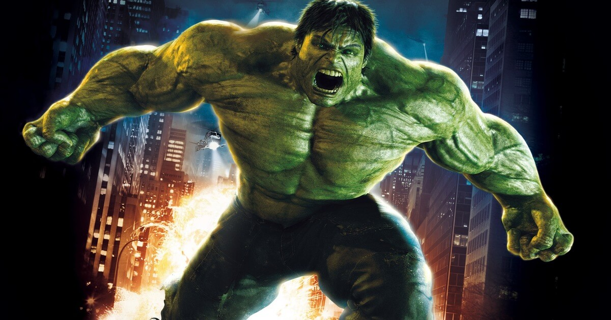

Hulk
Robert Bruce Banner
Aliases
Annihilator, Captain Universe, Joe Fixit, Mr. Fixit, Mechano, Professor, War, Bruce Bancroft, David Banner, David Bixby, Bob Danner, Bruce Jones, Bruce Roberts, David Blaine, the Green Scar, Green Goliath, Jade Giant, Bob, World-breaker, Sakaarson
Identity
Publicly known
Citizenship
U.S.A
Place of Birth
Dayton, Ohio
Occupation
Unemployed, former nuclear physicist
Known Relatives
Betty Ross Banner (wife, deceased), General Thaddeus "Thunderbolt" Ross (father-in-law), Jennifer Walters (She-Hulk, cousin), Morris Walters (uncle), Elaine Banner Walters (aunt, deceased), Brian Banner(father, deceased), Rebecca Banner (mother, deceased), Lyra (daughter), Skaar and Hiro-Kala (sons)
Group Affiliation
Formerly Avengers, Defenders, Fantastic Four, Pantheon, Horsemen of Apocalypse, Warbound
Education
Banner has a PhD in Nuclear Physics. The various Hulk personas have demonstrated different intelligence levels, from brutish to average to the same level of intelligence as Banner.
Powers
The Hulk possesses an incredible level of superhuman physical ability. His capacity for physical strength is potentially limitless due to the fact that the Hulk's strength increases proportionally with his level of great emotional stress, anger in particular. The Hulk uses his superhumanly strong leg muscles to leap great distances. The Hulk has been known to cover hundreds of miles in a single bound and once leaped almost into orbit around the Earth. The Hulk can also use his superhumanly leg muscles to run at super speeds, although his legs have limitless strength he does not have limitless speed and once he reaches a certain speed his legs become too strong and destroy the ground giving him no friction to run on, therefore he jumps to travel. The Hulk can slam his hands together creating a shock wave, this shock wave can deafen people, send objects flying and extinguish fires. His thunderclap has been compared to hurricanes and sonic booms. The Hulk has shown a high resistance to physical damage nearly regardless of the cause, and has also shown resistance to extreme temperatures, mind control, nuclear explosions, poisons, and all diseases. In addition to the regeneration of limbs, vital organs, and damaged or destroyed areas of tissue at an amazing rate. The Hulk also has superhuman endurance. The Hulk's body also has a gland that makes an "oxygenated per fluorocarbon emulsion", which creates pressure in the Hulk's lungs and effectively lets him breathe underwater and move quickly between varying depths without concerns about decompression or nitrogen narcosis.
Abilities
Dr. Bruce Banner is a genius in nuclear physics, possessing a mind so brilliant that it cannot be measured on any known intelligence test. When Banner is the Hulk, Banner's consciousness is buried within the Hulk's, and can influence the Hulk's behavior only to a very limited extent.
Weapons
While on Sakaar Hulk fought with gladiator's weapons
Paraphernalia
None